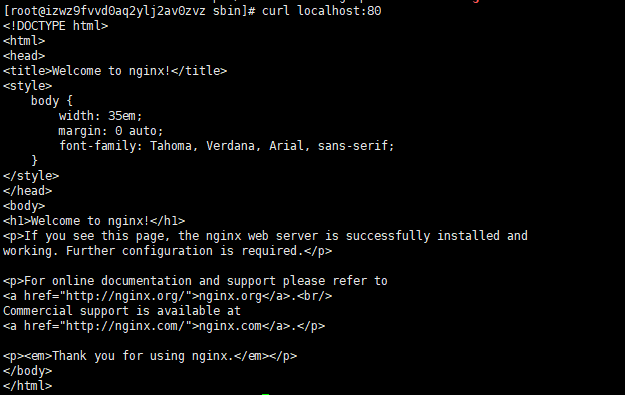

最近在做一个新冠知识图谱方面的工作，需要的对新冠知识图谱的三元组进行可视化的展示，这里选用的是Echarts来进行知识图谱可视化。
ssh反向代理实现内网穿透
由于实验室服务器为内网IP，因疫情影响不在学校的话是无法访问的，只能用teamviewer来远程桌面连接，teamviewer的延迟大家都懂的。所以采用ssh的连接还是十分必须的，这里我们需要有一台公网的服务器作为我们访问实验室服务器的中继，同时实验室的服务器也不能断网，这里采用的是阿里云。
正向代理
我们常说的代理一般指的就是正向代理。在正向代理的过程中，隐藏了真实的请求客户端，服务端不知道真实的客户端是谁，客户端请求的服务都被代理服务器代替来请求，某些科学上网工具扮演的就是典型的正向代理角色。用浏览器访问google等网站时，被残忍的block掉，于是你可以在国外搭建一台代理服务器，让代理帮我去请求google.com，代理把请求返回的相应结构再返回给我，这就是正向代理。 简单的讲就是通过一个中继来访问目标服务器，而不是直接进行访问，从而绕开GFW等。

反向代理
有别于正向代理，反向代理的对象是服务端。比如你访问www.google.com，其背后的服务器可能成千上万，而你并不需要关心，只需要知道反向代理服务器的地址就可以，反向代理服务器可以将你的请求转发到真实的服务器上。比如我们常用的nginx服务器，就是性能十分优秀的反向代理服务器，用来做负载均衡（[nginx负载均衡配置](https://www.cnblogs.com/diantong/p/11208508.html)）。

如何实现反向代理
比如我们有两台服务器A和B，A为实验室无公网ip服务器，B为阿里云有公网ip服务器。此时，若想让在校外的电脑C通过ssh登录C，你需要做的是： 在B上建立对A的ssh反向代理通道，然后用C登录B后再ssh进入A。
1. 建立反向代理
首先在A上操作，使用如下语句向B发起反向代理请求（这里最好root执行），这里会要求输入B对应用户的密码，执行成功后，会在B的7280端口映射向A的ssh请求(端口22)
1 | ssh -fCNR 3388:localhost:22 aliyun_user@aliyun_IP |
2. 检查是否执行成功
输入如下命令
1 | netstat -tnlp |
可以得到如下结果

3. 测试登录
首先用C登录B，然后在B上输入如下命令，输入A上用户名对应密码即可成功登录。
1 | ssh -p 3388 [A上的用户名]@localhost |
4. 设置autossh
为了确保连接的稳定性，采用autossh工具来实现ssh断开后的自动连接。首先需要再A上安装 autossh工具，然后执行以下语句即可 ，其中-M是指定另外一个端口7281用来监测ssh的连接情况
1 | autossh -M 7281 -fCNR 3388:localhost:22 aliyun_user@aliyun_IP |
Reference
CentOS Mongodb安装配置与数据导入
MongoDB
MongoDB 是由C++语言编写的，是一个基于分布式文件存储的开源数据库系统。
在高负载的情况下，添加更多的节点，可以保证服务器性能。
MongoDB 旨在为WEB应用提供可扩展的高性能数据存储解决方案。
MongoDB 将数据存储为一个文档，数据结构由键值(key=>value)对组成。MongoDB 文档类似于 JSON 对象。字段值可以包含其他文档，数组及文档数组。
特点
- 面向文档存储，操作简单
- 支持任何属性的索引，从而实现快速排序
- 高扩展性
- 支持多种编程语言
- 安装简单
- …
安装
CentOS下安装，官网 https://www.mongodb.com/download-center 复制对应版本下载链接
1 | 下载 |
创建数据和日志文件夹
1 | cd mongodb |
创建配置文件
1 | cd bin/ |
配置文件填写如下，主要配置数据和日志文件的路径信息和端口。
1 | dbpath=/home/mongodb/db |
启动服务
1 | ./mongod -f mongodb.conf |
常用命令
1 | 创建数据库 |
CentOS安装Nginx服务器
NGINX是一个高效的HTTP和反向代理的服务器，具体信息可查看官网：https://nginx.org/en/
1.源码安装
1 | 下载 |
安装
1 | 编译 |
2.启动Nginx
启动服务
1 | cd /usr/local/nginx/sbin |
1 | 重启 |
查看是否启动成功
1 | ps -ef | grep nginx |
访问
1 | #端口为配置文件中的端口号 |
启动成功的截图如下：

配置服务
此处配置的为Vue项目，首先在Vue项目中运行npm run build命令生成dist文件夹，然后修改nginx配置文件（配置文件在/usr/local/nginx/conf/nginx.conf）如下：
1 | server { |
重启服务
1 | 重启 |
PyTorch图神经网络库PyG
Pytorch Geometric (PyG) 是由德国研究者提出的基于pytorch的几何深度学习库，具有快速、易用的优势，使得图神经网络的搭建变得非常容易。Github地址：https://github.com/rusty1s/pytorch_geometric，论文地址： https://arxiv.org/pdf/1903.02428.pdf
图神经网络 (GNN) 是近年发展起来的一个很有前景的深度学习方向，也是一种强大的图、点云和流形表示学习方法。实现 GNN 具有挑战性，因为需要在高度稀疏且不规则、不同大小的数据上实现高 GPU 吞吐量，故而有了PyG的诞生。PyG利用专用的 CUDA 内核实现了高性能。它遵循一个简单的消息传递 API，将最近提出的大多数卷积和池化层捆绑到一个统一的框架中。所有实现的方法都支持 CPU 和 GPU 计算，并遵循一个不可变的数据流范式，该范式支持图结构随时间的动态变化，甚至比几个月前 NYU、AWS 联合开发的图神经网络库 DGL(Deep Graph Library) 快了 15 倍！
PyTorch Geometry 是一个基于 PyTorch 的几何深度学习扩展库，用于不规则结构输入数据，例如图(graphs)、点云 (point clouds) 和流形 (manifolds)。PyTorch Geometry 包含了各种针对图形和其他不规则结构的深度学习方法，也称为几何深度学习，来自于许多已发表的论文。
此外，它还包含一个易于使用的 mini-batch 加载器、多 GPU 支持、大量通用基准数据集和有用的转换，既可以学习任意图形，也可以学习 3D 网格或点云。
安装
1 | pip install torch-geometric |